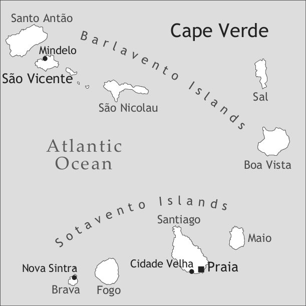

by Dominika Swolkien

The island of São Vicente is one of nine inhabited Cape Verdean islands. Located in the northwest of the archipelago, in the Windward (Barlavento) group, the island covers an area of 227 km2 with a population of 76,107.1 The population is markedly urban – 92.6% live in the port city of Mindelo, the second largest city in the country; Mindelo has traditionally been considered a cultural centre of Cape Verde. The remaining population is scattered among several fishing villages along the island’s coast: São Pedro in the southwest, where the international airport is located, Calhau in the east, and Salamansa in the north. There are a few rural communities (Mato Inglês, Lameirão, and Madeiral), but due to an extremely dry sub-Saharan climate, the interior of the island is mostly desert.
São Vicente Creole, a variety of Cape Verdean Creole, is the mother tongue of all the island’s native inhabitants and is often adopted by the children of immigrants from mainland Africa, China, and Europe. Exact figures for diaspora speakers of this particular variety are unknown. The Cape Verdean Creole of São Vicente stems from the Sotavento variety of Fogo; however, the later presence of Portuguese settlers, an influx of population from the neighbouring Barlavento islands (Santo Antão and São Nicolau), and the urban character of the variety have shaped its present structure. For the two Sotavento varieties of Santiago and Brava, see Lang (2012) and Baptista (2012) in this volume.
Due to its arid climate and lack of agricultural potential and resources, the island of São Vicente, discovered in 1462, remained uninhabited until the end of the 18th century. In 1795, a stable 300-year-old Cape Verdean Creole from Sotavento (mostly from Fogo) was brought by the first settlers – approximately 50 slaves with their Portuguese-born owner and 20 couples, who were freed tenant farmers. This Creole then underwent some degree of restructuring towards Portuguese due to contact with settlers from continental Portugal, the Azores, and Madeira; in 1797 these settlers formed a community of 232 fishermen, shepherds, and farmers (Swolkien 2004). Other specific sociohistoric factors such as intensive racial mixing, lack of marked social distinctions, and the presence of metropolitan Portuguese prisoners and political outcasts had an impact on the early stages of the variety’s formation.
Though slavery was abolished on São Vicente only in 1857, it had never been an important factor in the island’s demographics. According to the 1856 census, by which time São Vicente’s total population had grown to about 1,100, there were only 32 slaves on the island with 14 different owners (see Table 1 and Swolkien 2011+). None of the slaves spoke African languages; the overwhelming majority had been born on other Cape Verdean islands.
|
Table 1. Population numbers for the island of São Vicente (1795–1890) |
||||
|
Europeans |
free Cape Verdeans |
slaves |
total |
|
|
1795: beginning of settlement |
approx. 70 |
approx. 60 |
50 |
180 |
|
1797: start of influx from Santo Antão |
- |
- |
- |
232 |
|
1821: first map of urban nucleus |
- |
- |
- |
298 |
|
1838: first British coaling company |
- |
- |
- |
200 |
|
1856: emancipation of slaves (1857) |
- |
- |
32 |
1,100 |
|
1879: Mindelo becomes a city |
112 (Prtg.) |
- |
- |
3,717 |
|
1890: peak of port activities |
- |
- |
- |
6,881 |
The initially small language community grew steadily in spite of demographic fluctuations in years of famine and a general neglect of the island by the Portuguese colonial administration. In 1838, with the establishment of British coal companies in Mindelo, São Vicente’s deep and safe bay rapidly turned into one of the busiest and most important Atlantic ports; its coal depots for the growing maritime steam transport, foreign consulates, and various telegraphic companies caused a spectacular demographic boom from the 1850s onwards (Correia e Silva 2000). In a decade (1879–1889) the population grew by 75% (Swolkien 2004: 183). Mindelo officially became a city in 1879; in the 1880s, up to 170,000 passengers passed annually through Mindelo, which turned into the biggest urban centre of the colony. Foreigners, especially English-speaking Gibraltar Jews, opened businesses in the city and outnumbered the Portuguese-born inhabitants; thus, English has left its traces on the variety in some specific vocabulary related to sports and port jobs (see below). In that period, an intensive migration of Cape Verdeans from other islands, especially Santo Antão, created a heterogeneous linguistic situation; it is probable that the incoming peasants switched to a more prestigious urban variety of São Vicente Creole, levelling regional differences and introducing new features (Holm & Swolkien 2006).
By the end of the 19th century, a new, more stratified entrepreneurial society with a wealthy white and light-skinned mulatto bourgeoisie emerged, thus hampering social mobility. In this setting, Portuguese was established as the prestige language in a diglossic situation. Primary schooling (in Portuguese), though better than on other islands, was available only to an elite minority,3 and only a minority of Creole speakers (mostly civil servants of lower ranks) were likely to acquire some kind of proficiency in Portuguese.
The first half of the 20th century was marked by the progressive decline in the port’s activities; in 1958 the last coal companies abandoned São Vicente (Swolkien 2011+) causing a profound economic crisis on the island and aggravating emigration to Europe and the United States. The independence of the country in 1975, the installation of a democratic multi-party political system, and the development of a market economy in the 1990’s have increased foreign investments and tourism and greatly improved education (the island has six institutions of higher education), health, transportation, and port infrastructure. As a result, Mindelo has become a cosmopolitan city, though it has remained small.
Similar to other Cape Verdean islands after the independence of Cape Verde in 1975, Portuguese has held its position as an official language, while Creole is used in São Vicente’s daily life at home, in artistic contexts (for instance, in its very rich and internationally acknowledged music), and in informal conversations in most public domains such as shops, banks, post offices, and governmental institutions. Characteristically, even in the Portuguese Consulate at Mindelo the use of Creole is widespread. Portuguese, overwhelmingly used in writing, is still pervasive in the media and schools (where code-switching is common5) and in formal situations. However, its use in electronic media varies, as informal e-mails, mobile messages, and chats are likely to be written in Creole. In blogs, often written by upper class bilinguals, Portuguese is more likely to be used, though the comments are often in Creole.
Creole is the mother tongue of all São Vicente native inhabitants, and it is commonly acquired by the children of immigrants from mainland Africa, Europe, the Americas, and Asia. With its yacht marina, international airport, and seaport, Mindelo has a markedly cosmopolitan character, with a growing number of foreign professionals living on the island. It is not uncommon for children of Portuguese citizens to converse in Creole with their parents especially if they are the offspring of mixed unions. Sporadically, upper class Cape Verdean parents may insist on speaking Portuguese to their children, behaviour that might also be socially ridiculed.
Given the urban character of the São Vicente population, the main line of linguistic variation lies between the urban speech of the city of Mindelo and the speech of the inhabitants of the semi-rural hamlets and fishing villages. Due to the small size of the island and modern ease of contact between the speakers, these varieties are closely related and can be distinguished from one another by a few phonetic and lexical features best analyzed in terms of social rather than geographical variation. The city of Mindelo represents a highly stratified society in economic but also, to a considerable degree, in racial terms. A small elite is concentrated in and around a well-kept colonial city centre dating from the time of British economic predominance, while the majority of the population dwells in areas on the outskirts often resembling shanty towns. No variationist study on this variety is available yet. Nevertheless, what can be observed is that the speech of the upper middle class, often educated in Portugal or Brazil, is highly acrolectal and marked by lexical borrowings and morpho-syntactic interference from Portuguese.
The island of São Vicente presents the lowest illiteracy levels in the country (16 % in 2000). Due to the democratization of secondary education and a wide-ranging offer of higher education institutes, access to Portuguese is now available to the majority of the population. However, a high level of competence in European Portuguese, the equivalent of a passport to a reduced job market, is still only available to the very few upper middle class speakers educated in Portugal. The island strongly identifies with Europe and having dual citizenship (American or European) is appreciated in symbolic terms. A command of English is highly valued socially. People who have emigrated to Europe (especially Portugal, Italy, Spain, and the Netherlands) often visit their relatives on the islands and speak a Creole that is perceived as archaic. The speakers of Atlantic and Chinese languages, i.e. immigrants from mainland Africa and the Asian community, tend to segregate themselves and are often ostracized by Cape Verdeans.
The language isn't written very much. This fact is largely due to the local elite’s resistance to accepting the official ALUPEC orthography6, which, in the minds of speakers, reflects the Sotavento but not the São Vicente variety.
No standard orthography exists, and the few existing texts such as humoristic columns in the newspaper or billboard advertisements are spelled in an unsystematized fashion. No television channel or radio station broadcasts entirely in Creole since Portuguese is the main language of these media; moreover, the variety that is most heard in the media on São Vicente is the Santiago variety since the national radio and television stations are located in Santiago.
An acute awareness of the variety’s distinctiveness is widespread among native speakers, who immediately distinguish São Vicente Creole from varieties originating on other Barlavento islands, even the Santo Antão variety, which seems to be very closely related. The Sotavento varieties, especially that of Santiago, are commonly considered as “incomprehensible”, due not only to real linguistic difference but also to the regional rivalries and prejudices. Radio and television programmes in the Santiago variety have increased inter-island linguistic contact, and migrations have reduced this negative perception, especially among young speakers.
Written historical texts and grammars of the São Vicente variety are even fewer than those for the Santiago variety. The variety was first mentioned in Botelho da Costa & Duarte (1886). Fernandes’s (1991) dictionary and Almada’s (1961) grammatical description make sporadic reference to the São Vicente variety. Veiga (1982) is the first grammatical description where the São Vicente variety is strictly separated from the other varieties of Cape Verdean Creole. The first scholarly article that was solely dedicated to this variety is Pereira (2000).
São Vicente Creole has a vowel system of eight oral vowel phonemes (see Table 2), all of them with a nasal counterpart (nasality of the vowels is represented by <n> following the vowel).
|
Table 2. Vowels |
|||
|
front |
central |
back |
|
|
close |
i |
u |
|
|
mid |
e |
ɐ <a> |
o |
|
open |
e <é> |
a <á> |
ɔ <ó> |
Low or open vowels occur only in stressed syllables. Vowels in unstressed syllables are often reduced to a high central vowel [ɨ] or deleted, a tendency parallel to modern European Portuguese.
Apart from monophthongs there are a number of rising and falling diphthongs, composed of a vowel and a voiced palatal /j/ <i> or a labio-velar approximant [w] <u> (guardá [gwɐrˈda] ‘to save’, boi [boj] ‘ox’). Nasal diphthongs such as pão [pɐ̃w] ‘bread’ are typical of acrolectal speech, alternating with nasal monophthongs in the basilect (pon [põ]).
São Vicente Creole has 18 oral and three nasal consonantal phonemes (see Table 3). The alveolar trill is often realized as a uvular trill. [ʃ] and [s] are in complementary distribution: [ʃ] appears before voiceless consonants and in word-final position (skóla [ˈʃkɔlɐ] ‘school’, más [maʃ] ‘more’). /ʎ/ is a marginal phoneme. [ʃ] and [tʃ] often alternate: xuva ~ txuva ‘rain’.
|
Table 3. Consonants |
|||||||
|
bilabial |
labiodental |
alveolar |
postalveolar |
palatal |
velar |
||
|
plosive |
voiceless |
p |
t |
k |
|||
|
voiced |
b |
d |
g |
||||
|
nasal |
m |
n |
ɲ <nh> |
||||
|
trill |
r |
||||||
|
tap |
ɾ <r> |
||||||
|
fricative |
voiceless |
f |
s |
ʃ <x> |
|||
|
voiced |
v |
z |
ʒ <j> |
||||
|
affricate |
voiceless |
tʃ <tx> |
|||||
|
voiced |
dʒ <dj> |
||||||
|
lateral |
l |
ʎ <lh> |
|||||
Complex two- and three-consonantal syllable onsets (trá ‘take away’, stragód ‘spoilt’) and complex codas (ólt ‘tall’, porks ‘pigs-PL’) are common.
Word stress is generally placed on the penultimate syllable. But contrary to other varieties of Cape Verdean Creole, verbs are always stressed on the last vowel.
There is no morphological case marking on São Vicente Creole nouns. Natural gender is indicated by different lexemes (katxór ‘dog’ vs. kadéla ‘bitch’), by derived forms (diretor ‘director (male)’ vs. diretóra ‘director (female)’), or by postposed sex-denoting words (txukin mótx ‘male piglet’ vs. txukin féma ‘female piglet’), though the latter strategy is becoming obsolete, especially when the referent is human.
Modifying adjectives follow the noun. The position preceding the noun is marked and affects the adjective’s semantics e.g. un grand amig ‘a good friend’ vs. un amig grand ‘a friend who is a big person’.
Animacy plays an important role in the language’s grammar. Adjectives in both attributive and predicative position obligatorily agree in natural gender with human nouns (e.g. un amdjer prigóza ‘a dangerous woman’, un óm prigoz ‘a dangerous man’ vs. un aventura prigoz ‘a dangerous adventure’); only as an exception do they agree with nouns having an inanimate referent and constitute, in those cases, structures borrowed directly from the lexifier and related to the semantic fields of education and administration (e.g. un próva stérna ‘an external exam’, kónta própria, ‘own account’ cf. Portuguese uma prova externa, conta própria).
There is a wide range of number marking strategies. Plurality can be inferred from the context or indicated on the first element in the noun phrase such as the plural forms of articles, demonstratives, possessives, or by numerals and quantifiers. Also, the plural suffix -s exists, though its use is variable. Factors such as context, animacy, specificity, and language contact play an important role in determining whether a noun will take a plural marker. Inflectional plural marking on human nouns, as in (1), represents a stable tendency while the use of the suffix on inanimate nouns is an exception and can be ascribed to recent borrowings from the lexifier which have often not been phonologically integrated (e.g. meius d’komunikasãu ‘the media’, cf. Portuguese meios de comunicação).
There are two demonstratives. Es [es] ‘this’ is the proximal demonstrative; kel ‘that’ is the distal demonstrative. Both show the plural forms es [eʃ] ‘these’ and kes ‘those’. Both admit pronominal and adnominal use and can be combined with the spatial adverbs li ‘here’ and la ‘there’ (es vapor li ‘this steamship here’ vs. kel vapor lá ‘that steamship there’). This dual deictic distinction is not necessarily spatial as it may be temporal.
There is a preposed indefinite article un ‘a’ (plural uns). There is evidence that the demonstrative kel ‘the’ (plural kes) acquires the value of a definite article in associative contexts, though the process is still in an initial stage. In (2), kel pédra ‘the stone’ refers in an associative way to anel ‘the ring’.
Personal pronouns can be classified into dependent subject and object pronouns and independent pronouns. The latter carry stress while the dependent subject and object pronouns and the adnominal (preposed) possessives are unstressed.
|
Table 4. Personal pronouns, adnominal and pronominal possessives |
||||||
|
dependent subject |
dependent object |
independent pronouns |
adnominal possessives |
pronominal possessives |
||
|
sg |
pl |
|||||
|
1sg |
N |
-m |
mi |
nha |
nhas |
d’meu, d’minha |
|
2sg |
bo |
-b |
bo |
bo |
bos |
d’bo, d’bósa |
|
2sg.polite |
bosê |
bosê |
bosê |
bosês |
d’bosê |
|
|
3sg |
el |
-l |
el |
se |
ses |
d’seu |
|
1pl |
no |
-nos |
nos |
nos |
nos |
d’nos, d’nósa |
|
2pl |
bzot |
bzot |
bzot |
bzot |
d’bzot |
|
|
2pl.polite |
bosês |
bosês |
bosês |
bosês |
d’boses |
|
|
3pl |
es |
-s |
es |
ses |
ses |
d’es, d’seus |
As shown in Table 4, there is no gender distinction with personal pronouns. A binary politeness distinction is made in second person. In polite 2SG and 2PL the stressed independent pronouns are used for the object function.
Possession is marked by juxtaposition. Unstressed adnominal possessives precede the noun; the form of the possessive (singular or plural) indicates the number of the possessum (nha bot ‘my boat’ vs. nhas fidj ‘my children’), though in cases of homophonous PL forms (ses kaza ‘their house/houses’) the number of the possessum is inferred from the context.
Independent pronominal possessives consist of a preposition de ‘of’ (contracted to d’) and an independent personal pronoun (d’nos ‘ours’, d’bzot ‘yours’) or a preposition and a special form (d’meu ‘mine’, d’seu ‘his, hers’). The same forms function as stressed adnominal possessives which follow the noun (un fidj d’bosa ‘a son of yours’, un irmon d’minha ‘a brother of mine’).
In possessor noun phrases the possessor follows the possessum; the construction is invariant and the presence of the preposition de ‘of’ is obligatory (káza d’un senhor ‘the house of a gentleman’).
There are two (pro) noun conjunctions: má ‘and’, as in (3), which overlaps with the comitative má ‘with’ and y [i] ‘and’. Personal pronouns can be overtly conjoined with a personal name or with other NPs (e.g. mi y nha mãi ‘my mother and I’).
Generic nouns are unmarked as in (4).
In comparative constructions of equality, the standard is marked by moda ‘as’ and the adjective is unmarked as in (4):
In comparative constructions of superiority, the adjective is marked by má(s) ‘more’ and the standard by diki/k/duki/d’k ‘than’, e.g.:
Comparative constructions of inferiority are avoided. Superlative is expressed by the same construction with a universal standard marked by k or de (d’) ‘of’ e.g.:
The numerals from 1 to 10 are: un, dos, tres, kuát, sink, seis, sét, oit, nóv, dés.
São Vicente Creole verbs show no person, number, or gender morphology. Contrary to Cape Verdean Creole of Santiago, they do not show tense or aspect suffixes.
Unmarked forms of stative verbs tend to have present-time reference, whereas unmarked dynamic verbs tend to have past (perfective) reference.
(7) a. N krê sink sebóla.
3SG want five onion
‘I want five onions.’
b. El toká y el kantá.
3SG play and 3SG sing
‘He played and sang.’
However, the division between the stative and the dynamic verbs represents only a tendency; a number of stative verbs (such as morá ‘live’, otxá ‘think’, gostá ‘like’) need a marker to yield a present reading. Marking of the stative verb podê ‘can’ with a present marker (8a) may distinguish between participant internal quality and ability, deontic permission (8b), and epistemic possibility, which can also be expressed by suppletive forms (9).
(8) a. N te podê spendê sen kil.
1SG PRS can lift hundred kilogram
‘I can lift a hundred kilograms.’
b. N podê bai?
1SG can go
‘May I go?’
(9) Na fóm d’korenta y seis N pudia ten uns kinz óne.
in hunger of.forty and six 1SG could have DET.PL fifteen year
‘During the famine of forty-six, I could have been fifteen-years old.’
A set of high frequency stative verbs display both weak and strong suppletion for past (sabê ‘know’ – sabia, sub or ten ‘have’ – tinha, tiv) and conditional readings (subes ‘know’ or tives ~ tiver ‘have’).
There are four preverbal tense and aspect markers in São Vicente Creole; there is no marker for voice (see passive constructions below) or mood. The main difficulty of the analysis rests in the multifunctionality and allomorphy of the markers, which is caused by phonological erosion. Hence context, especially that provided by adverbs, is often crucial in determining the meaning of the marker. The markers derive from those of the Sotavento varieties.
|
Table 5. Tense and Aspect markers in São Vicente Creole |
||
|
lexical aspect |
tense/aspect |
|
|
Ø |
dynamic |
past perfective |
|
ta [tɐ] ~ te [tɨ] |
stative and dynamic |
imperfective (habitual and progressive) simple present, future |
|
táva ~ tá [ta] |
stative and dynamic |
past imperfective conditional/counterfactual |
|
ti ta |
stative and dynamic |
progressive present |
|
táva ta/te ~ tá ta/te |
stative and dynamic |
progressive past conditional/counterfactual |
There is no future marker; future is indicated by ta ~ te and disambiguation is aided by the context (10a).
The adverb já and its allomorph á ‘already’ oscillate between an adverb (11a) and a grammaticalized completive marker (11b).
Conditional (past counterfactual) use of the past imperfective marker táva and its allomorph tá is illustrated in (12).
(12) Se bo tá portá dret bo ka táva d’kastig.
if 2SG COND behave well 2SG NEG COND of.punishment
‘If you had been behaving well, you wouldn’t have been grounded.’
São Vicente Creole also displays a series of auxiliary constructions with the verb ten ‘have’ and participle forms as in (13) where past perfect value is expressed.
There are two copulas. The first is e ‘be’, which introduces nominal and adjectival predicates. Its presence is obligatory, and it displays strong suppletive forms (é, éra, foi/fui, fose); contrary to verbs, it selects only independent pronominal subjects (14a). It may also select a special negator n ‘not’ (14b). The form used after modal verbs is ser ‘to be’ (podê ser ‘can be’, devê ser ‘should be’, ten k ser ‘must be’).
The second copula is the locative copula ta ~ te (suppletive forms: táva/tá, tiv), which is homophonous with the tense and aspect markers. The form stód is used after modal verbs (podê stód ‘could be’) and markers (15 b).
São Vicente Creole displays three negators: The sentential negator nãu (cf. 16), the verb phrase negator ka ‘not’, which immediately precedes the TMA markers (cf. 12), copulas (cf. 14b), and unmarked verbs (cf. 16), and the negator n, which is used exclusively with the copula e ‘to be’ (cf. 14b).
(16) Nãu, es ka tiv náda!
neg 3PL NEG had nothing
‘No, they did not have any (blame).’
In negative clauses with indefinite pronouns, the negator ka co-occurs with the indefinite pronoun (16).
The verbal coordinating conjunction is y as in (7b).
São Vicente Creole displays SVO word order. With ditransitive verbs the indirect object precedes the direct object yielding a double-object construction as in (17); if the recipient is human, the indirect object may be coded by the preposition pa, though this construction is less common and considered acrolectal (cf. 18).
(17) Tina dá se prufsor un flor.
Tina give 3SG.POSS teacher DET flower
‘Tina gave her teacher a flower.’
(18) Maria ta ben dá un flor pa se prufsor.
maria PRS come give DET flower for 3SG.POSS teacher
‘Maria is going to give a flower to her teacher.’
Argumental subjects are obligatorily expressed; the 2SG (but not 2SG POLITE and 2PL) subject pronoun is omitted in affirmative imperative (19a-b). In prohibitive constructions subject pronouns are obligatory (19c).
(19) a. Mordê-l!
bite-3sg
‘Bite him!’
b. Bosê kontá jent!
2SG.POL tell people
‘Tell us!’
c. Ka bo mordê-l!
NEG 2SG bite-3sg
‘Don’t bite him!’
There is no expletive subject in São Vicente Creole. The following examples illustrate weather (20) and existential constructions (21):
(21) Ten un irmã e k bá pa Sal.
have DET sister FOC REL go for Sal
‘There is one sister that went to Sal.’
São Vicente Creole displays several constructions to express reflexivity:
(i) no marking: El frí ‘he/she hurt him/herself.’
(ii) kabésa ‘head’ (optionally preceded by a POSS); a marginal strategy used in fixed expressions such as: El matá (se) kabésa ‘He/she killed him/herself.’
(iii) a dependent object pronoun co-referential with the subject: N oiá-m na tlivizon ‘I saw myself on the TV.’
(iv) an independent pronoun in object position modified by an intensifier: El matá el mes ‘He/she killed him/herself’; this is the most common strategy.
Reciprocity is constructed by the word kunpanher ‘comrade’ e.g.
(22) Kes kórda ilhá na kunpanher.
DET line entangle on each.other
‘The washing lines got entangled with each other.’
There is a prototypical passive construction with the auxiliary verb ‘be’ and a participle, also common among basilectal speakers, as in (23), and a non-prototypical passive structure as in (24).
(24) Es fazénda ta lizá fásil.
DEM cloth PRS iron easily
‘This cloth irons easily.’
Polar questions are distinguished from declarative sentences by interrogative intonation. Question words in content questions are fronted (25a), but they may remain in situ (25b):
Question words are: kual or kol ‘which’, ken or kenhê ‘who’, kze or ukê ‘what’, ondê or dondê ‘where’, tónt óra ‘when’, manera ‘how’, tont or tontê ‘how much’, and modkê, modken, or purkê ‘why’.
In focused constructions focused elements are moved to the left and followed by the complementizer k.
In nominal cleft constructions the focused element may be preceded by the copula (both present and suppletive forms), and followed by the background clause; optionally the focused element may be preceded by a copula highlighter (27).
The coordinating conjunctions are: y ‘and’, ma, ‘but’, o ‘or’, o…o… ‘either… or…’, nen…(nen) ‘neither…(nor)’.
São Vicente Creole has four complementizers: a neutral k ‘that’, the complementizers kma and ma, which introduce object clauses after epistemic verbs (pensá ‘think’ or dzê ‘say’; a zero complementizer in this context is possible), and the complementizer pa ‘for’ with verbs of desire (mestê ‘need’, krê ‘want’) as in (29). The complementizer k used with epistemic verbs seems to represent a recent development.
(29) Ma el krê pa N vivê má el.
but 3SG want COMP 1SG live with 3SG
‘But he wants me to live with him.’
Interrogative object clauses are headed by se ‘whether’.
(30) N ka sabê se el te lenbrá de txeu koza.
1SG NEG know COMP 3SG PRS remember of many thing
‘I don’t know whether she remembers a lot of things.’
Adverbial clauses are headed by simple subordinating conjunctions such as dpos ‘after’, pamód ou purkê ‘because’, inkuánt ‘while’, kom ‘as’, kondê ‘when’, se ‘if’, pa ‘in order to’, and complex subordinating conjunctions such as antes d’ ‘before’ or (para) alén de ‘in addition to’.
Relative clauses follow the head noun and are headed by the relative pronoun k. There are several relativization strategies. In (31) a direct object is relativized, the relative pronoun k is optional, and there is no resumptive pronoun.
(31) Un ves tinha kór (k) jent tá pagá.
det time had car REL people PST pay
‘Before, there was a car we paid (to go to school).’
In (32) there is no relative pronoun, and the resumptive pronoun shows no agreement with its antecedent, 3SG being a default form.
(32) Es istória [...] no dá-l foi na skóla
DEM.PL story 1PL give-3SG COP.PST in school
‘We have studied these stories in school.’
In instrumental relative clauses, the relative particle is optional, and the resumptive pronoun is obligatory.
(33) Kel pédra (k) N kebrá janéla k el…
DEM stone REL 1SG break window with 3SG
‘the stone with which I broke the window’ (lit. ‘the stone that I broke the window with it’)
The vocabulary of Cape Verdean Creole of São Vicente is constituted by the late-18th-century lexicon of the Sotavento varieties of Cape Verdean Creole; it later underwent changes due to contact with non-standard Portuguese southern dialects and the Barlavento varieties of Cape Verdean Creole. The number of words of Atlantic origin is very limited, and most of those in daily use in Santiago Creole are unknown to the speakers of São Vicente Creole. There is a growing number of loan words from modern Portuguese. Cape Verdean Creole of São Vicente also displays a considerable number of integrated loan words from English, and these can be divided into two sets: Those that entered the variety in the mid 19th and early 20th century in the time of British economic activities on the island and which are becoming obsolete (krene ‘crane’, ovetáim ‘overtime’) and recent borrowings that have entered the language due to access to Western media and music (xouent ‘showy’, náis ‘nice’, uotxá ‘to watch out’, tanks ‘thank you’, bois ‘a young man, a boy’ ).